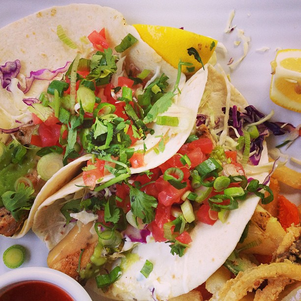

Restaurants

The Wharf Restaurant
Welcome to The Wharf Restaurant, the Cayman Islands Premier Restaurant established in 1988. Celebrating 25 years of excellence, dining under the stars and on the waterfront located on the edge of the Caribbean Sea, marking the beginning of Cayman Islands 7 Mile beach.
Have a seat at our picturesque Oceanside bar – “Ports of Call’. Sip on your Cayman Lemonade as you watch the sunset rippling over the calm waters. Enjoy happy hour 7 days a week from 5PM till 7PM.
Our International Team of Chefs will tantalize your taste buds as they create your delicious and memorable entrees, such as our Basil and Pistachio Crusted Sea Bass from our creative A La Carte Menu. Or choose something from our varied daily Features that our Chef personally recommends.
Copper Falls Steakhouse
Copper Falls Steakhouse presents one of the most unique and innovative menus ever seen. Not only does every entrée include a complimentary martini, well-drink or beer, you also get to choose which vegetables and starch you prefer – plus each steak dinner has a choice of six different sauces.
From an 8-ounce Filet to a 28-ounce Porterhouse, our steaks are hand-cut and aged 28 days before grilling to your liking.
If you fancy something other than steaks, our menu also offers Rack of Lamb, Center-Cut Pork Chop, various chicken and seafood dishes, as well as several vegetarian dishes. On Sundays and Mondays come in for our delicious Prime Rib dinner served with Horseradish Cream Sauce or tasty Au Jus.
The Lighthouse Restaurant
The Lighthouse in Cayman is an iconic restaurant with stunning views over the water and an outstanding menu that features a creative mix of fresh, local seafood and Italian cuisine. Charismatic owner Giuseppe Gatta ensures the food is cooked to perfection, stocks an impressive wine cellar and never fails to make you feel like one of the family.
With an emphasis on local produce, light house sources finest meat, produce and seafood from the region’s land and sea. We house a crew of friendly people who would take care of your culinary tastes and delights in the best possible way. Enjoy the true meaning of service.
"This was simply one of the best meals we ate during our week on Grand Cayman - the pasta was flavorful and great on its own, and it was all the more delicious with fresh local seafood. But what really made the meal was the ambience. Sitting outside, listening to the powerful south shore waves crash against the rocks below you, while you're having an excellent Italian seafood meal on a pier, jutting out into the ocean ... a magnificent experience."